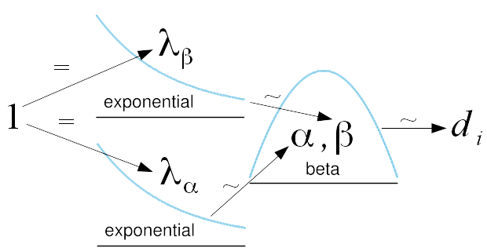

Voting procedures can replace traditional quorum with the use of statistical techniques. If aggregate opinion on the alternatives is similar, according to those techniques, we declare a failure of quorum.
Motivating examples
Pie Club is voting on which pie will be featured at their first August meeting. After tallying the votes, buko pie receives a mean score of \(0.69\) and fish pie receives a mean score of \(0.18\).1
Before the decision is finalized, however, an observant member notices that the meeting is two members short of the 25 required for quorum. Because Pie Club is scrupulously democratic, the vote is annulled. Some members grumble their doubt that the landslide will reverse with two more votes.
Pie Club is voting on which pie will take home the title Pie of the Decade. Will it be lemon meringue pie or Tarta de Santiago? The results are in—quorum checked in advance this time—and they are… \(0.49\) for meringue and \(0.48\) for Tarta. While meringue’s devotees celebrate, Tarta’s die-hards feel something has gone wrong. Can such a close result really give them confidence that meringue is the preference of the whole club, including the 12 members who couldn’t make it to meeting? If just one of them had attended and cast a vote favoring Tarta, wouldn’t that have swung the outcome?
Quorum
The minimum number of members who must be present at the meetings of a deliberative assembly for business to be validly transacted is the quorum of the assembly. The requirement of a quorum is a protection against totally unrepresentative action in the name of the body by an unduly small number of persons. (Robert, Honemann, and Balch 2011)
So quorum is a proxy for representativeness. But as the examples demonstrate, it’s, at best, a loose proxy. Sometimes (as in the first example) quorum is too demanding—it forbids a decision when the votes endorse one. On other occasions (as in the second example), quorum is too lax—it declares representativeness when there can be no certainty of it.
Is there an alternative then? How do we determine if a vote is representative? Statistics!
Statistics
Bayesian
Frequentist
For each pair of alternatives, we’d like to find which of these three is true:
\(\mu_2 \gg \mu_1\)
\(\mu_1 \gg \mu_2\)
\(\mu_2 \approx \mu_1\)
where \(x \gg y\) means something like We are justified in believing that \(x > y\). and \(x \approx y\) means something like We aren’t justified in believing that \(x > y\) or that \(y > x\).. The first two correspond to quorum and the third corresponds to a failure of quorum.
To establish \(\mu_2 \gg \mu_1\), we construct a lower credible bound (a one-sided credible interval)confidence bound (a one-sided confidence interval) on \(\mu_2 - \mu_1\) base on our votes. The lower bound delimits the region where \(\mu_2 - \mu_1\) is largest. If the delimited region includes \(0\), we must reject \(\mu_2 \gg \mu_1\) (i.e. if the region most favorable to \(\mu_2\) still doesn’t exclude \(0\), we aren’t justified in believing \(\mu_2 > \mu_1\) (at the chosen credibilityconfidence level)).
The approach for \(\mu_1 \gg \mu_2\) is similar (simply swap in an upper bound or \(\mu_1 - \mu_2\)).
If we reject \(\mu_2 \gg \mu_1\) and \(\mu_1 \gg \mu_2\), we must accept \(\mu_2 \approx \mu_1\) and declare a failure of quorum.
For example, we’d like to determine if the credibleconfidence bounds support the conclusion that buko pie really is preferred to fish pie. If Pie Club bylaws specified a \(95\%\)credibleconfidence bound and the lower bound for \(\mu_{buko} - \mu_{fish}\) stretched to \(0.359\) while the upper bound stretched to \(0.58\), we’d declare that quorum had been reached in favor of buko pie. (We reject \(\mu_{fish} \gg \mu_{buko}\) because it’s bounded region includes \(0\). We can’t reject \(\mu_{buko} \gg \mu_{fish}\) because it’s bounded region excludes \(0\).) Alternately, if the lower bound stretched to \(-0.1\) and the upper bound stretched to \(0.58\), we’d declare a failure of quorum.
How do we construct these credible bounds? We derive them from the posterior probability distribution created using Bayesian parameter estimation (Kruschke 2013). To construct this posterior, we start by specifying a model for the distribution of paired differences2. Because the difference can only take on values in the interval \(\left(-1, 1\right)\), the (transformed from \((0, 1)\) to \((-1, 1)\)) beta distribution is a sensible choice3. To get a sense of the beta distribution, you can look at the calculator here.
Now that we have a model of differences, we must choose prior probability distributions for its parameters. Note that \(\alpha = \beta = 1\) collapses the beta distribution to the uniform distribution. Because the uniform distribution is the maximum entropy distribution on a supported interval, we should choose prior distributions of \(\alpha\) and \(\beta\) with means of \(1\)(Sivia and Skilling 2006). The maximum entropy distribution with mean \(1\) supported on \(\left(0, \infty\right)\) is the exponential distribution with \(\lambda = 1\). So the prior on each of \(\alpha\) and \(\beta\) is \(Exp(1)\). All of this is diagrammatically represented in the accompanying figure.

We model the vote differences with a beta distribution. That beta distribution’s parameters have priors of \(Exp(1)\).
Now that we have our data and prior probability distributions, Bayes’ theorem allows us to reallocate probability mass to form the posterior probability distributions. We generate numerical estimates of the posterior probability distributions using adaptive Metropolis-within-Gibbs (Roberts and Rosenthal 2009)(Bååth 2012). These posteriors on the parameters of beta allow us to straightforwardly calculate the posterior on the mean of the difference using the formula for the mean of a beta distribution.
How do we construct these confidence bounds? That depends.
If the number of votes is large (say, more than 30) (and the distribution of votes satisfies some other conditions), we can do a \(t\)-test on the paired differences of the votes.4
If the number of votes is small (say, 30 or fewer), we have a problem. We cannot assume that the underlying distribution of votes is normal. Voters could be polarized , for example. And because the number of votes is small, we can’t rely on the central limit theorem to approximate normality. So we must use a distribution-free (sometimes called non-parametric) method.
The distribution-free test for paired data is the Wilcoxon signed-rank test(Wilcoxon 1945). However, this test requires the symmetrical distribution of paired differences. Again, we cannot assume that.
So, as far as I know, there’s no simple frequentist procedure which is applicable in the small sample case.
A scenario in which the quorum status (achieved or failed) depends on the credibility level chosen (e.g. \(95\%\) or \(99\%\))
Two scenarios in which each alternative retains its mean score, but the quorum status changes
Two scenarios in which the number of voters remains the same, but the quorum status changes
Problems
We’ve tacitly assumed that our actual voters are a random sample of the population of potential voters. This is false (Though one could make it true through adoption of appropriate voting procedures). Self-selection bias, whether due to differential interest, availability, transportation, &c., means that the sample is non-representative. However, the problem of non-random samples also applies to traditional quorum’s assurances of representativeness.
The procedure also accepts the claim of (Robert, Honemann, and Balch 2011) that the purpose of quorum is to ensure representativeness. In consequence, the procedure takes votes as exogenous and characterizes only the resulting information. But one could support quorum for its deliberative, community-building, or even obstructive effects.
The conclusions have a rather intuitive interpretation in terms of likelihood, maybe even more intuitive than the traditional quorum interpretation (We ensure that our decisions are representative by requiring 25% of our members to attend.). But getting to the conclusions requires a computer and uncommon math.
The math itself may be familiar to some, but there are still the perennial problems of frequentist interpretation (Goodman 2008):
Neat. The test showed it’s highly likely that buko pie is the preferred pie?
No, it either is or isn’t the preferred pie. There’s no probability involved.
What was all that \(5\%\) talk then?
Of all confidence intervals constructed at the \(95\%\) level, \(95\%\) should contain the true population difference.
Uhh…
So this procedure is less accessible than traditional quorum. How much less depends on the relative importances placed on accessible conclusions and accessible process.
Because this calculation is less accessible and will likely be performed by one or a few individuals, it’s import to establish a clear and strict procedure. We should not permit, for example, the choice of modeling distribution after exploratory data analysis. The more degrees of freedom we give the analyst, the more power we give them to influence results (Simmons, Nelson, and Simonsohn 2011).
Finally, this procedure admits only post-hoc declarations of quorum. With the traditional procedure, we can just take attendance at a meeting and determine the quorum status for every referendum therein. With the new procedure, after tallying the votes on an issue, we have to run the quorum calculation to retroactively determine quorum if we achieved quorum.
Extended procedures
Non-parametric
As mentioned, the procedure specified above assumes that the paired differences are amenable to modelling by a beta distribution. This leads to overconfident inferences (Hoeting et al. 1999). The assumption can be relaxed through the use of Bayesian non-parametric methods (Walker et al. 1999). The idea is to use a model with an infinite number of parameters and marginalize out surplus dimensions on our finite data.
Tying
We can also modify the procedure to permit tying. Under standing voting procedures, scores of \(0.490\) to \(0.488\) produce an identical outcome ( i.e. victory for the first option) to scores of \(0.82\) to \(0.12\). However, if those values are accurate estimates of the population scores (i.e. the uncertainty is small), one could argue that the former scenario suggests a compromise or synthesis position.
By defining regions of practical equivalence, parameter estimation allows the possibility of a tie (Kruschke 2013). For example, Pie Club could decide that a difference of mean scores smaller than 0.01 counts as a tie. If the credible interval on the difference of means is contained entirely in this region, we don’t have a failure of quorum (uncertainy about which option is preferred), but certainty that neither option is substantially preferred.
Multiple alternatives
For simplicity, we looked at referenda with only two alternatives. We can extend the procedure to referenda with more alternatives. The most straightforward method would be to apply the procedure described above pairwise. The credibility level would need to adjusted by something like the Šidák correction to deal with the problem of multiple comparisons. A better solution would be to perform a Bayesian ANOVA analogue with follow-up tests (Wetzels, Grasman, and Wagenmakers 2012).
Multiple alternatives
For simplicity, we looked at referenda with only two alternatives. We can extend the procedure to referenda with more alternatives. The most straightforward method would be to apply the procedure described above pairwise. The confidence level would need to adjusted by something like the Šidák correction to deal with the problem of multiple comparisons. A better solution would be to perform ANOVA with follow-up tests.
Non-ordinal outcomes
The procedure described above applies to ordinal outcomes. That is, we were looking for the alternative with a score higher than all others. If we are trying to assess outcomes on a ratio or interval scale, we’d have to use a different procedure.
The appropriate modification depends on the issue at hand. In cases where caution is required, an organization could dispense with quorum and simply use the conservative bound. In other circumstances, an organization could place limits on the maximum size of the interval.
For example, suppose Pie Club put the size of its budget for the next year to a vote. If it were feeling fiscally responsible, it could simply sets its budget to the \(95\%\) lower bound on the mean vote. An alternative would be to declare a failure of quorum if the vote didn’t produce a \(95\%\) interval smaller than \(\mu \pm 10\%\).
Future work
Social welfare analysis versus traditional quorum (Bordley 1983)
Sivia, Devinderjit, and John Skilling. 2006. Data Analysis: A Bayesian Tutorial. Oxford University Press.
Walker, Stephen G, Paul Damien, Purushottam W Laud, and Adrian FM Smith. 1999. “Bayesian Nonparametric Inference for Random Distributions and Related Functions.” Journal of the Royal Statistical Society: Series B (Statistical Methodology). http://deepblue.lib.umich.edu/bitstream/handle/2027.42/73242/1467-9868.00190.pdf.
Wilcoxon, Frank. 1945. “Individual Comparisons by Ranking Methods.” Biometrics Bulletin.
Throughout this post, I’ll be working with continuous range voting:
Polling rule
That is, each voter scores each option on a range from 0 to 1 (exclusive).
Aggregation rule
The individual scores are then averaged to arrive at an overall score.
Decision rule
The option with the highest mean is the winner.
The techniques described here could be extended to many alternate procedures.↩
When using paired samples (here, we’d like to pair each person’s vote on buko pie to their vote on fish pie), we can transform two samples into a single sample of their differences. We can then use our single sample techniques on \(d_i = buko_i - fish_i\) where \(y_i\) is the \(i\)th person’s vote on proposal \(y\).↩
This entails the false assumption that our paired differences follow a beta distribution. Later, we’ll discuss possibilities for remedying this. For the moment, the beta distribution gives passable results, for its simplicity.↩
When using paired samples (here, we’d like to pair each person’s vote on buko pie to their vote on fish pie), we can transform two samples into a single sample of their differences. We can then use our single sample techniques on \(d_i = buko_i - fish_i\) where \(y_i\) is the \(i\)th person’s vote on proposal \(y\).↩
For visual clarity, the plots below show only the bound which crosses \(0\) the least. If and only if this bounded region includes \(0\), quorum has failed.↩